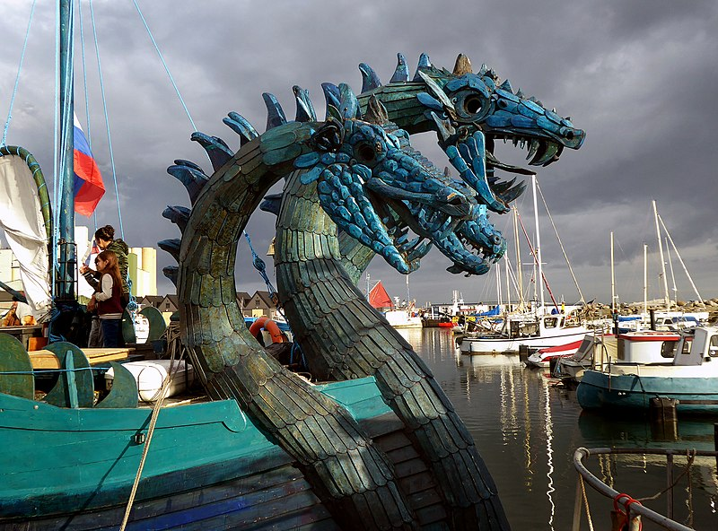

A dragon is a reptile-like legendary creature that appears in the folklore of many cultures worldwide. Beliefs about dragons vary considerably through regions, but dragons in western cultures since the High Middle Ages have often been depicted as winged, horned, four-legged, and capable of breathing fire. Dragons in eastern cultures are usually depicted as wingless, four-legged, serpentine creatures with above-average intelligence. Commonalities between dragons' traits are often a hybridization of feline, avian, and reptilian features. Scholars believe huge extinct or migrating crocodiles bear the closest resemblance, especially when encountered in forested or swampy areas, and are most likely the template of modern Oriental dragon imagery.
Etymology
The word dragon entered the English language in the early 13th century from Old French dragon, which in turn comes from Latin: draconem (nominative draco) meaning "huge serpent, dragon", from Ancient Greek δράκων, drákōn (genitive δράκοντος, drákontos) "serpent, giant seafish". The Greek and Latin term referred to any great serpent, not necessarily mythological.[6] The Greek word δράκων is most likely derived from the Greek verb δέρκομαι (dérkomai) meaning "I see", the aorist form of which is ἔδρακον (édrakon). This is thought to have referred to something with a "deadly glance," or unusually bright or "sharp" eyes, or because a snake's eyes appear to be always open; each eye actually sees through a big transparent scale in its eyelids, which are permanently shut. The Greek word probably derives from an Indo-European base *derḱ- meaning "to see"; the Sanskrit root दृश् (dr̥ś-) also means "to see"
Myth origins
